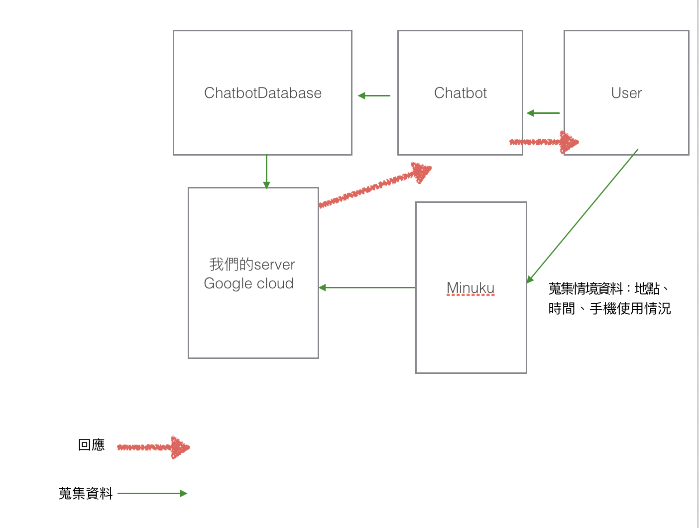
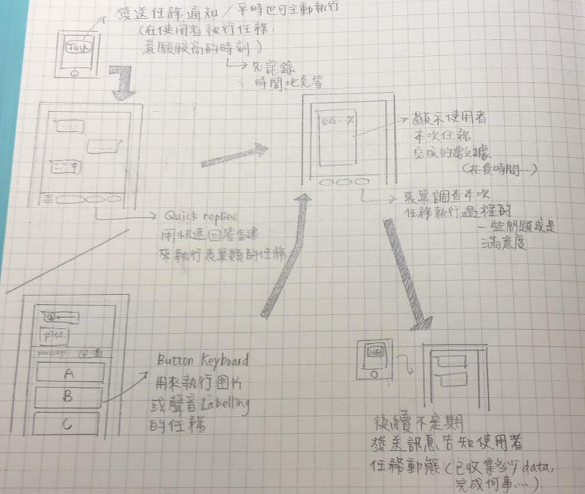

Structure Design
我們利用IBM Watson的服務來建立Chatbot，此外還會連接我們自己的Google Cloud Server以及我們所研發的Minuku系統來分析使用者的資料。其中使用者的資料除了作為crowdsourcing的用途外，也會作為未來chatbot 互動改善的資料。（例如：優化發送crowdsourcing任務通知的時間，或是依照使用者的位置發送任務通知等）

User Flow Note
